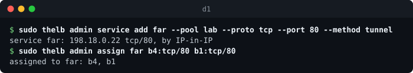
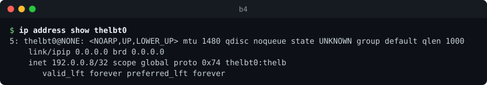

Guides
Direct routing and tunnels
A director hands packets to backends in one of two ways. Direct routing is the simplest; IP-in-IP tunnels reach backends in other networks.
The two methods#
A service's --method decides how the director passes packets to the backends. Either way, the backend answers the client directly, from the VIP's address, and your application sees the client's real address.
direct (the default) | tunnel | |
|---|---|---|
| What the director does | sends the packet to the backend's MAC address, unchanged | wraps the packet in an extra IPv4 header addressed to the backend (IP-in-IP) |
| Where backends can be | on the directors' network (the same L2 segment) | anywhere the directors can route to |
| Extra bytes per packet | none | 20 |
| On the backend | the VIP on thelb0 | also thelbt0, which unwraps the packets, and a smaller TCP segment size |
| IPv6 | yes | not yet: IPv4 only |
Choose direct when the backends are on the directors' network. Choose tunnel when they are not:
sudo thelb admin service add far --pool main --proto tcp --port 80 --method tunnel
sudo thelb admin assign far remote-1:tcp/80
b4 behind a router, and by b1.As text
$ sudo thelb admin service add far --pool lab --proto tcp --port 80 --method tunnel
service far: 198.18.0.22 tcp/80, by IP-in-IP
$ sudo thelb admin assign far b4:tcp/80 b1:tcp/80
assigned to far: b4, b1What a tunnelled backend needs#
- The
ipipmodule, and IP protocol 4 let through from the directors. - Replies sent from the VIP's address. The backend sends replies through its own router, with the VIP as the source address. A router or firewall that drops packets from "foreign" source addresses will drop them, and the service will not work. This is often called source address validation, uRPF, or a cloud's source/destination check. Allow the VIPs as source addresses on the backends' networks.
On the backend, theLB:
- creates
thelbt0, an IP-in-IP interface that accepts packets from any director, and gives it the address192.0.0.8(a special address for exactly this, from RFC 7600; nothing is sent from it); - turns reverse-path filtering off on
thelbt0- the unwrapped packets come from clients that the backend reaches through another interface - and makes it loose instead of strict for all interfaces if it was strict; - lowers the TCP segment size (MSS) it announces - the interface's MTU minus 60, so 1440 on a normal network - so that clients' packets still fit once wrapped.
All of it is removed when the backend stops.

thelbt0 on b4: the tunnel interface, with its 192.0.0.8 address.As text
$ ip address show thelbt0
5: thelbt0@NONE: <NOARP,UP,LOWER_UP> mtu 1480 qdisc noqueue state UNKNOWN group default qlen 1000
link/ipip 0.0.0.0 brd 0.0.0.0
inet 192.0.0.8/32 scope global proto 0x74 thelbt0:thelb
valid_lft forever preferred_lft foreverA backend whose control VIP is behind a router can still join - through the router. Its log says it can serve only tunnelled services, and a director refuses to assign it to a direct one.
A director's machine as a backend#
In small setups, a director's machine can also run your application. Start the director first. Then start a backend on the same machine - as a second systemd unit, with After=thelb-director.service - with a name of its own:
sudo thelb backend --join 10.0.0.10:7443 --secret-file /etc/thelb/backend.secret \
--name lb-1-web --offer web=tcp/80,check=http:/
sudo thelb admin approve lb-1-web
sudo thelb admin assign web lb-1-web:web- The director and the backend are separate programs.
thelb statuson that machine asks the director;thelb status --role backendasks the backend. - A backend with its director's name is refused.
- Its offers must use the service's own port: no port mapping on a director's machine.
- While that director leads, IPVS hands the machine's share to its own stack. While another director leads, it is sent there like to any backend.